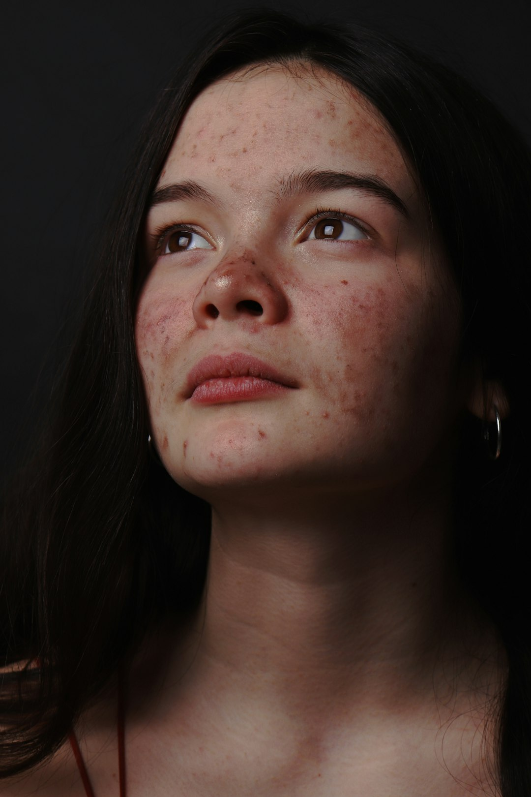

Acne
A acne é uma doença de pele comum que ocorre quando os folículos pilosos ficam obstruídos por óleo e células mortas da pele. Essa obstrução leva ao desenvolvimento de cravos, espinhas e, em casos mais graves, cistos e nódulos.

A condição é frequentemente associada a alterações hormonais que aumentam a produção de sebo (óleo) pelas
glândulas sebáceas, especialmente durante a adolescência.

Bactérias presentes na pele, como a Propionibacterium acnes, podem infectar os folículos bloqueados, resultando em inflamação.
A acne pode afetar pessoas de todas as idades, embora seja mais comum durante a adolescência e início da idade adulta. Isso ocorre devido às mudanças hormonais significativas que acontecem nessas fases da vida, particularmente o aumento na produção de andrógenos. Esses hormônios estimulam as glândulas sebáceas a produzirem mais óleo, aumentando a probabilidade de obstrução dos poros. No entanto, muitos adultos, especialmente mulheres, podem continuar a enfrentar problemas com acne bem além da adolescência, muitas vezes devido a flutuações hormonais relacionadas ao ciclo menstrual, gravidez ou condições médicas como a síndrome do ovário policístico.